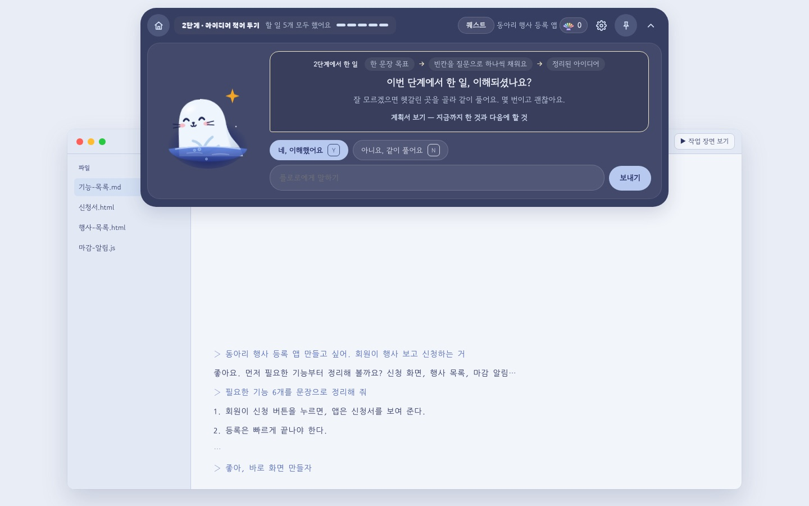
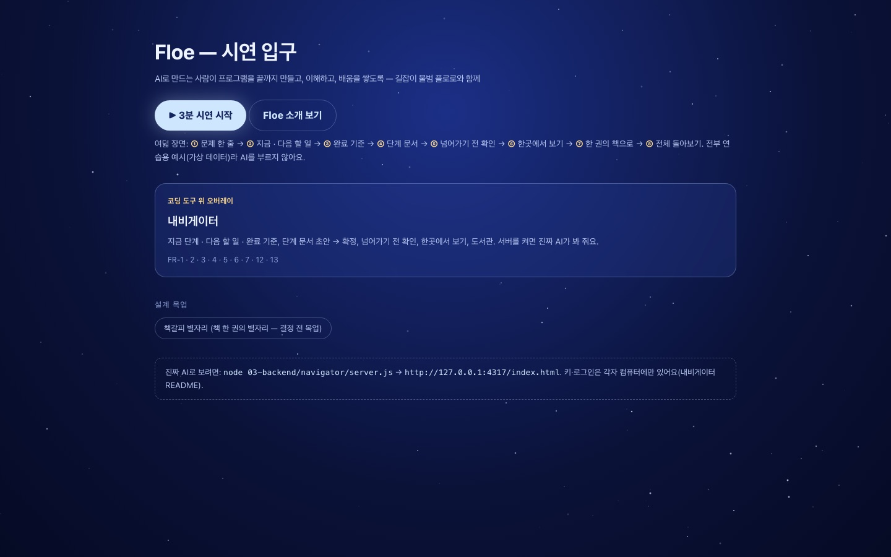
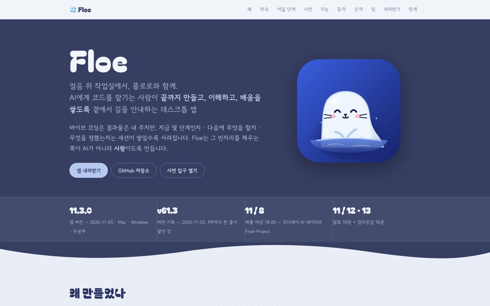
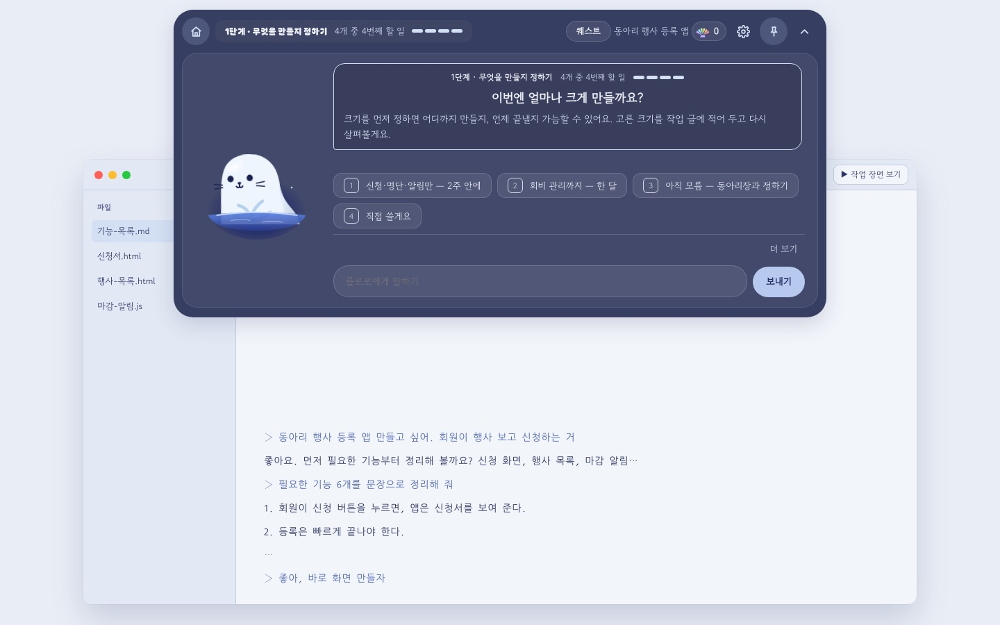

Floe 데모를
클라우드 컴퓨팅 팀 과제 · 2026-12-02
이재엽 · 송해광 · 박민혁 · 오성준 · 김주경
(0:30 · 누적 0:30 · 발표 [발표자])
안녕하세요. 저희는 Floe라는 앱의 데모 페이지를 AWS에 올린 과정 을 발표합니다.
차례는 평가표 그대로입니다. 개요, 구성도, 쓴 기술과 배포, 소스, 시연, 역할, 그리고 GitHub와 자동화입니다. 화면 아래 줄에 지금 어느 칸인지 보입니다.
AI로 만드는 사람은 늘고,
100%
50%
0
2023
2024
2025
70%
76%
84%
43%
33%
쓰는 사람
AI 도구를 쓰거나 쓸 계획
믿는 사람
AI가 낸 결과를 믿는다
출처: Stack Overflow 개발자 설문 2023 ~ 2025 · Floe 발표 덱에서 인용 2026-codyssey-final-proj.github.io/Floe-open-index
(1:00 · 누적 1:30)
먼저 왜 이 주제인지입니다. 전 세계 개발자 설문에서, AI 도구를 쓰는 사람은 2년 새 70%에서 84%로 늘었습니다.
그런데 AI가 낸 결과를 믿는다는 사람은 43%에서 33%로 줄었습니다. 코드는 빨리 나오는데, 왜 그렇게 됐는지 설명하지 못하는 겁니다.
저희 팀이 만든 Floe는 이 틈을 메우려는 앱입니다. 이 숫자는 Floe 발표 페이지에서 가져왔습니다.
질문이 오면: "믿는 사람 2023년 값은요?" → 같은 문항은 2024년부터 있어 두 해만 그렸습니다.
Floe는 길을 잃지 않게 하는 길잡이입니다
55% 다음에 뭘 할지 몰랐다
73% 만든 것을 끝까지 설명하지 못했다
코디세이 수강생 33명 · 2026.11
연습 데모 · 단계를 넘기 전에 이해했는지 묻는 화면

출처: Floe 발표 덱 2026-codyssey-final-proj.github.io/Floe-open-index · 화면은 우리 데모 페이지
(1:00 · 누적 2:30)
저희가 수강생 33명에게 직접 물었습니다. AI로 만들다가 55%는 다음에 뭘 할지 몰랐고, 73%는 만든 것을 끝까지 설명하지 못했습니다.
Floe는 그래서 세 가지를 합니다. 프로젝트를 여덟 단계 지도로 보여 주고, 할 일은 하나씩만 주고, 단계를 넘기 전에 오른쪽 화면처럼 "이해되셨나요?" 를 묻습니다. 초안은 AI가 쓰고, 넘어갈지는 사람이 정합니다.
이 앱의 연습용 데모와 소개 페이지를 클라우드에 올리는 것이 이번 과제입니다.
이번 과제의 목표는 셋입니다
주소 하나로 누구나 연다 S3 + CloudFront에 올림 · 11/17부터 열림
손으로 만들지 않는다 AWS 자원은 모두 Terraform 코드로
버튼으로 서버를 만든다 포털 양식 → 자동 배포 · 진행 중
다섯 명 · 3주(11/10 ~ 12/02) · AWS 서울 리전 · 예산 알림 월 $40
(0:50 · 누적 3:20)
개발 목표는 셋입니다. 첫째, 주소 하나로 누구나 열 수 있게 합니다. 이건 11월 17일부터 열려 있습니다.
둘째, AWS 자원을 콘솔에서 손으로 만들지 않습니다. 전부 Terraform이라는 설계도 코드로 만듭니다. 누가 무엇을 만들었는지 남기기 위해서입니다.
셋째, 포털에서 양식을 내면 서버가 만들어지게 합니다. 이건 지금 진행 중이고, 어디까지 됐는지는 뒤에서 그대로 말씀드립니다.
환경은 팀 다섯 명, 3주, 서울 리전입니다.
과제 예시 구성도에 우리 것을 맞추면
정적
동적
site/ 칸만 읽음
사용자
DNS
DNS
Cloudflare · Route 53 생략
CloudFront
https 주소 · 운영 중
S3 · site/ 칸
파일 81개 · 운영 중
ELB
쓰지 않음 · 서버가 한 대
EC2
포털 운영 · 소개 서버 예정
RDS
쓰지 않음 · DB 없음
운영 중
예정
쓰지 않음
2026-11-24 저장소 기록 기준 · 서버 상태는 발표 전에 다시 확인
(1:30 · 누적 4:50)
쉬운 말 세 줄
무엇이 어디에: 화면 파일은 S3라는 창고에 있고, CloudFront가 꺼내서 https 주소로 보여 줍니다. 서버(EC2)는 포털용 한 대가 있습니다.누가 무엇을: 누구나 주소로 화면을 봅니다. 창고 문은 CloudFront만 열 수 있습니다.무엇이 깨질 수 있나: 서버가 꺼지면 포털만 안 됩니다. 데모 화면은 서버와 상관없이 열립니다.
질문이 오면: "ELB와 RDS는 왜 없나요?" → 서버가 한 대라 나눠 줄 곳이 없고, 저장할 사용자 데이터가 없어서입니다. 과제 안내도 EC2 한 대, Route 53 생략을 허용했습니다.
교수님이 주신 예시 그림에 저희 것을 그대로 올렸습니다. 왼쪽에서 사용자가 들어옵니다.
(위 줄) 정적인 길 입니다. 화면 파일은 S3에 있고 CloudFront가 https 주소로 내보냅니다. 초록색은 지금 돌고 있는 것입니다.
(아래 줄) 동적인 길 입니다. 서버 EC2가 한 대 돌고 있고, 소개 페이지용 서버 한 대는 점선, 예정입니다.
흐린 칸 두 개, ELB와 RDS는 쓰지 않았습니다. 안 쓴 것을 쓴 것처럼 그리지 않았습니다. DNS는 Route 53 대신 이미 가진 도메인의 Cloudflare를 씁니다.
포털 양식 하나가 서버가 되기까지
GitHub 템플릿
포털 양식
GitHub runner
S3 보관소
Systems Manager
EC2 + EBS
설계도 원본을 저장소에 둠
로그인하고 네 칸을 채움
검사하고 묶어서 올림
완성된 설계도를 bundles/ 칸에
포털 서버에서 terraform 실행
소개 페이지 서버와 앱 디스크
됨
시험 중
첫 실행 전
됨
미리 보기 확인
예정
됨
시험 · 확인 중
예정
2026-11-24 기준 · 미리 보기에서 만들어질 자원 5개를 확인(11/17) · docs/deploy-pipeline.md
(1:30 · 누적 6:20)
쉬운 말 세 줄
무엇이 어디에: 서버 설계도 원본은 GitHub에, 값이 채워진 설계도는 S3의 bundles 칸에 있습니다. 실행은 포털 서버가 합니다.누가 무엇을: 팀원은 포털에서 양식만 냅니다. AWS 계정이 없어도 됩니다.무엇이 깨질 수 있나: 중간 한 곳이 막히면 서버가 안 생깁니다. 그래서 늘 "미리 보기"부터 돌립니다.
질문이 오면: "서버까지 실제로 만들어 봤나요?" → 11월 24일 기준으로는 미리 보기까지입니다. 만들어질 자원 다섯 개(서버, 디스크, 고정 IP, 보안 그룹, 디스크 붙이기)를 확인했습니다. [발표 전에 실제 상태로 고칠 것]
이번에는 서버를 만드는 흐름입니다. 왼쪽부터 순서대로입니다.
설계도 원본은 GitHub에 있습니다. 팀원이 포털에 로그인해서 이름, 주소, 서버 크기, 디스크 크기 네 칸 을 채웁니다.
그러면 GitHub runner가 설계도를 검사해서 S3에 올리고, AWS Systems Manager가 포털 서버에서 Terraform을 돌려 서버를 만듭니다.
색은 상태입니다. 초록은 된 것, 노랑은 시험 중, 점선은 예정 입니다. 이 길 전체가 끝까지 돈 것은 아직 아니고, 미리 보기까지 확인했습니다.
쓴 기술은 다섯 층입니다
화면 HTML · CSS · JavaScript, 빌드 도구 없음 파일 81개 스크립트 Node.js(내 컴퓨터에서 보기) · Bash(배포) 3개 설계도 Terraform 1.11.4 자원 44개 AWS S3 · CloudFront · EC2 · EBS · IAM · Systems Manager · ECR · Budgets 서울 리전 포털 · 협업 Backstage · Authentik · Cloudflare · GitHub Actions · Jira 워크플로 3개
파이썬 · 자바 프레임워크와 서버 코드는 없습니다. 정적 사이트이기 때문입니다.
(0:50 · 누적 7:10)
쓴 기술을 다섯 층으로 정리했습니다.
화면은 HTML, CSS, 자바스크립트 뿐이고 빌드 도구가 없습니다. 파일 81개를 그대로 올립니다.
AWS 자원은 Terraform 으로 44개를 정의했습니다. 포털은 Backstage라는 오픈소스이고, 로그인은 Authentik이 맡습니다.
평가표에 있는 파이썬이나 자바 프레임워크는 쓰지 않았습니다. 서버에서 도는 코드가 없는 정적 사이트라서입니다.
질문이 오면: "자바스크립트가 만 줄이 넘던데요?" → 화면 코드는 본 프로젝트 Floe에서 가져온 것이고, 이 저장소에서는 웹에서 AI 없이 돌도록 고쳤습니다.
DB는 없습니다. 데이터는 S3 세 칸에 둡니다
S3 보관소 한 통
site/ bundles/ state/
사이트 파일 81개
완성된 설계도 묶음
배포마다의 Terraform 상태
CloudFront가 읽음 밖으로 열리는 칸
runner가 올리고 서버가 받아 감
잠금으로 한 번에 한 사람
상태 버킷
기초 인프라의 Terraform 상태
비공개 · 버전 관리
EBS 디스크 · 예정
소개 페이지 서버가 받아 둘
사이트 사본
RDS · 쓰지 않음
저장할 사용자 데이터가
없습니다
표가 없어 ERD 대신 저장소 지도를 그렸습니다 · infra/main.tf
(0:50 · 누적 8:00)
쉬운 말 세 줄
무엇이 어디에: 데이터는 S3 한 통의 세 칸에 있습니다. site는 화면, bundles는 설계도, state는 "지금 무엇이 만들어져 있는지" 적은 장부입니다.누가 무엇을: 밖에서는 site 칸만 CloudFront를 거쳐 봅니다. 나머지 두 칸은 밖에서 열리지 않습니다.무엇이 깨질 수 있나: state 장부가 지워지면 Terraform이 자기가 만든 것을 잊습니다. 그래서 버킷 맨 위를 통째로 맞추는 명령을 금지했습니다.
질문이 오면: "ERD는 어디 있나요?" → DB를 쓰지 않아 표가 없습니다. 그 대신 데이터가 놓이는 자리를 이 그림으로 냈습니다.
평가표에는 DBMS와 ERD가 있습니다. 솔직하게 말씀드리면 저희는 DB를 쓰지 않았습니다. 데모는 미리 넣은 예시로 돌고, 저장할 사용자 데이터가 없습니다.
대신 데이터가 놓이는 곳은 S3 한 통의 세 칸 입니다. 화면 파일, 완성된 설계도, 그리고 Terraform의 상태입니다.
밖으로 열리는 칸은 site 하나뿐입니다. 설계도와 상태는 밖에서 볼 수 없습니다.
AI는 만들 때 쓰고, 웹 데모에서는 뺐습니다
만들 때
Claude Code 코딩 에이전트
초안 claude-drafted 표시
사람이 확인 열어 보고 고침
브랜치 · PR 병합은 사람이
훅이 막는 것: AI의 main 푸시 · 비밀값이 든 커밋
보여 줄 때
Floe 앱 설치해서 쓰는 본 제품
Claude 초안 · 대화
웹 데모 이 저장소가 올린 것
AI 호출 없음 미리 넣은 연습 응답
정적 페이지에 API 키를 넣으면 페이지를 연 누구나 봅니다. 그래서 뺐습니다.
(1:00 · 누적 9:00)
AI는 두 군데로 나눠 말씀드립니다.
(위 줄) 만들 때 입니다. 인프라 코드와 문서 초안은 Claude Code라는 코딩 에이전트가 썼습니다. AI가 쓴 곳에는 표시를 남기고, 사람이 열어 보고 고친 뒤에 올립니다. AI가 main에 바로 올리거나 비밀값을 커밋하면 훅이 막습니다.
(아래 줄) 보여 줄 때 입니다. 본 제품인 Floe 앱은 Claude를 불러 초안을 받습니다. 그런데 웹 데모에서는 AI를 뺐습니다. 정적 페이지에 API 키를 넣으면 누구나 볼 수 있기 때문입니다. 그래서 데모는 미리 넣은 예시 응답으로 돕니다.
질문이 오면: "AI API, RAG, Agent 중 무엇인가요?" → 개발에는 Agent(Claude Code)를 썼고, 본 제품은 AI API를 씁니다. RAG는 쓰지 않았습니다. 이 웹 데모 자체는 AI를 부르지 않습니다.
파일을 올리면 주소가 됩니다
내 컴퓨터 main 최신 커밋
S3 · site/ 비공개 버킷
CloudFront https 주소
브라우저 누구나
deploy.sh 올리고 캐시 비움
CloudFront만 읽기 허용
폴더 주소도 index.html로
2026-11-17 첫 배포. 파일 81개가 주소 하나로 열렸습니다.
infra/main.tf · scripts/deploy.sh · docs/deploy-log.md
(1:00 · 누적 10:00)
쉬운 말 세 줄
무엇이 어디에: 파일은 비공개 S3의 site 칸에 있고, 주소는 CloudFront가 줍니다.누가 무엇을: 올리기는 팀원이 배포 스크립트로 합니다. 읽기는 CloudFront만 합니다.무엇이 깨질 수 있나: main이 아닌 것을 올리면 저장소와 화면이 어긋납니다. 그래서 스크립트가 main 최신 커밋이 아니면 멈춥니다. 올린 직후 옛 화면이 보이면 캐시가 비워지는 1 ~ 5분을 기다립니다.
질문이 오면: "S3를 그냥 공개하면 되지 않나요?" → 그러면 https가 없고, 같은 통에 있는 설계도와 상태 칸까지 열릴 수 있습니다. 그래서 CloudFront만 site 칸을 읽게 했습니다.
AWS에 적용한 방법 첫째, 정적 호스팅입니다.
내 컴퓨터에서 배포 스크립트 한 줄 을 치면 파일이 S3로 올라가고 캐시가 비워집니다. S3는 비공개이고, CloudFront만 읽을 수 있게 했습니다.
CloudFront가 https 주소를 주고, 폴더로 끝나는 주소도 index.html로 바꿔 줍니다. 11월 17일에 파일 81개를 처음 올렸고, 지금도 그 주소로 열립니다.
오래 가는 키 없이 서버를 만듭니다
누가 무엇으로 들어가나 어디까지
팀원 GitHub 로그인 + 일회용 번호 포털에서 양식 내기 포털 GitHub App 이 저장소 하나만 GitHub runner 실행하는 동안만 빌리는 역할(OIDC) 설계도 올리기 · 실행 부르기 배포 담당 둘 IAM 사용자 · 그룹 권한 Terraform으로 자원 만들기 바깥 누구나 Cloudflare를 거친 443 포트 화면 보기까지 · SSH는 없음
infra/platform · infra/account · docs/deploy-pipeline.md 10절
(1:10 · 누적 11:10)
쉬운 말 세 줄
무엇이 어디에: 로그인은 Authentik이라는 로그인 서버가 맡고, 권한 표는 AWS IAM에 있습니다.누가 무엇을: 표 그대로입니다. 팀원은 양식까지, 배포 담당 두 명만 AWS 자원을 직접 만집니다.무엇이 깨질 수 있나: 저장소에 올릴 수 있는 팀원은 누구나 배포를 돌릴 수 있습니다. 팀 안에서 권한을 나누지 않기로 한 결정과 같은 범위입니다. 그래서 규칙 문서와 자동 검사로 지킵니다.
질문이 오면: "OIDC가 뭔가요?" → GitHub가 "이 실행은 이 저장소에서 왔다"는 증명서를 내면, AWS가 그걸 보고 잠깐 쓰는 출입증을 줍니다. 저장해 둔 키가 없으니 샐 키도 없습니다.
AWS에 적용한 방법 둘째는 권한입니다. 누가 어디까지 할 수 있는지를 표로 냈습니다.
핵심은 오래 가는 키를 어디에도 두지 않았다 는 점입니다. GitHub runner는 실행하는 동안만 AWS 역할을 빌립니다. 포털은 이 저장소 하나만 다루는 GitHub App을 씁니다.
서버는 Cloudflare를 거친 443 포트만 열고, SSH는 아예 없습니다. 서버에 들어갈 때는 AWS Systems Manager로 들어갑니다.
실제로 치는 명령은 이것뿐입니다
# 처음 한 번: AWS 자원 만들기 (지워지는 줄이 보이면 멈춘다)
terraform -chdir=infra init
terraform -chdir=infra plan
terraform -chdir=infra apply
# 사이트 올리기: main의 최신 커밋만
scripts/deploy.sh --dry-run
scripts/deploy.sh
# 서버 만들기: 포털 양식, 또는 같은 일을 명령으로
gh workflow run provision.yml -f deployment=<이름> -f action=plan
docs/aws-setup.md 3절 · .github/workflows/provision.yml
(0:50 · 누적 12:00)
쉬운 말 세 줄
무엇이 어디에: 명령은 내 컴퓨터나 AWS CloudShell에서 칩니다. 설계도는 저장소의 infra 폴더에 있습니다.누가 무엇을: terraform apply는 배포 담당이, 한 번에 한 사람만 합니다. deploy.sh는 권한을 받은 팀원이 칩니다.무엇이 깨질 수 있나: plan 결과에 "지워지는 줄"이 있는데 그냥 apply 하면 돌고 있는 것이 사라집니다. 그래서 멈추고 팀에 묻습니다.
질문이 오면: "plan과 apply는 뭐가 다른가요?" → plan은 무엇이 만들어질지 미리 보여 주기만 하고, apply가 실제로 만듭니다.
배포에 쓰는 명령입니다. 세 묶음입니다.
처음 한 번은 Terraform으로 AWS 자원을 만듭니다. plan으로 미리 보고 apply로 만듭니다.
화면을 바꿀 때는 deploy.sh 한 줄입니다. dry-run을 붙이면 무엇이 올라갈지만 보여 줍니다.
서버는 포털 양식으로 만들고, 같은 일을 맨 아래 명령으로도 부를 수 있습니다.
하루 1.3달러로 돌립니다
포털 서버 · t3.small
소개 페이지 서버 · t3.micro (예정)
고정 IP 둘
디스크 · gp3 36GB
$0.62
$0.31
$0.24
$0.11
지금은 하루 약 $0.8입니다. 예산 알림은 월 $40, 발표 뒤에는 모두 지웁니다.
docs/deploy-pipeline.md 8절 · 서울 리전 대략값 · S3와 CloudFront는 하루 몇 센트
(0:40 · 누적 12:40)
쉬운 말 세 줄
무엇이 어디에: 돈은 거의 서버 두 대와 고정 IP에서 나갑니다. S3와 CloudFront는 이 크기에서 하루 몇 센트입니다.누가 무엇을: 예산의 절반, 그리고 전부에 닿으면 계정 주인에게 메일이 옵니다.무엇이 깨질 수 있나: 발표 뒤에 서버를 안 지우면 돈이 계속 나갑니다. 그래서 지우는 날을 정해 둡니다.
질문이 오면: "1.3달러는 실제 청구액인가요?" → 아닙니다. 요금표로 계산한 대략값입니다. [발표 날 AWS 비용 화면의 숫자와 맞출 것]
비용입니다. 서버 한 대가 돌고 있는 지금은 하루 약 0.8달러 이고, 소개 페이지 서버까지 만들면 1.3달러 가 됩니다. 연한 막대가 아직 안 만든 서버입니다.
월 40달러에 예산 알림을 걸었고, 발표가 끝나면 Terraform으로 모두 지웁니다.
소스는 12/01 밤 태그로 묶어 냅니다
됨
데모 사이트 세 화면
공개 주소 (S3 + CloudFront)
Terraform 세 묶음 적용
IAM 그룹 셋 · 예산 알림
설계도 PR 자동 검사
포털 열림 (11/20)
진행 중
포털 로그인 연결
provision 첫 실행
서버 템플릿 다듬기
예정
소개 페이지 서버 (EC2 + EBS)
랜딩 · 온보딩 페이지
리허설 · 시연 녹화
동결 태그 (12/01 밤)
소스 zip: github.com/2026-Codyssey-Final-Proj/Floe-demo-page/archive/refs/tags/presentation-2026-12-02.zip
2026-11-24 기준 · GitHub 이슈 #20(전체 지도) · 태그를 단 뒤에 zip 주소가 열립니다
(0:50 · 누적 13:30)
소스 제출과 완성도입니다. 소스는 12월 1일 밤에 저장소를 얼리고 태그를 답니다. 그 태그의 zip을 그대로 제출합니다. 발표 날 배포가 깨지면 이 태그로 되돌립니다.
완성도는 세 칸으로 그대로 냈습니다. 왼쪽이 된 것 입니다. 데모 세 화면, 공개 주소, Terraform 세 묶음, 권한과 예산 알림, 자동 검사, 포털.
가운데는 진행 중, 오른쪽은 예정입니다. [발표 전에 이 판을 실제 상태로 고칠 것. 저장소는 비공개라 zip은 로그인한 사람만 받습니다.]
질문이 오면: "저장소 구조는요?" → site는 올라가는 화면, infra는 Terraform 설계도, templates는 포털이 쓰는 서버 설계도, scripts는 배포 스크립트, docs는 절차와 기록입니다.
주소 하나로 열립니다
d2ai5qb4183u6q.cloudfront.net

시연 입구: 여기서 데모와 소개로 갑니다
d2ai5qb4183u6q.cloudfront.net/intro/

소개 페이지: Floe가 무엇인지 한 장에
https://d2ai5qb4183u6q.cloudfront.net · 2026-11-24에 이 주소에서 찍은 화면
(1:10 · 누적 14:40 · 시연)
이제 실행 결과입니다. (브라우저로 넘어가 주소를 직접 연다. 인터넷이 안 되면 이 장의 사진으로 말한다.)
이 주소가 AWS에 올라간 결과입니다. 왼쪽이 시연 입구이고, 오른쪽이 소개 페이지입니다. 주소 끝에 intro를 붙이면 열립니다.
휴대폰에서도 같은 주소로 열립니다.
질문이 오면: "주소가 왜 이렇게 생겼나요?" → 도메인을 따로 사지 않고 CloudFront가 주는 기본 주소와 인증서를 그대로 썼습니다.
연습 데모는 AI 없이 여덟 장면을 걷습니다
/navigator/ · 처음
만들고 싶은 것을 말하면
/navigator/ · 1단계

할 일을 하나씩, 고를 수 있게 줍니다
https://d2ai5qb4183u6q.cloudfront.net/navigator/ · 예시 데이터로만 돕니다
(1:30 · 누적 16:10 · 시연)
(입구에서 "3분 시연 시작"을 누른다. 예시 답을 하나 고르고, 다음 장면으로 두세 번 넘긴다.)
이게 Floe의 연습용 데모입니다. 만들고 싶은 것을 말하면, 플로로가 할 일을 하나씩 줍니다. 답은 고르기만 하면 됩니다.
단계를 넘어가기 전에는 아까 보신 것처럼 "이해되셨나요?"를 묻습니다.
여기서 중요한 점은, 이 데모가 AI를 부르지 않는다 는 것입니다. 전부 미리 넣은 예시로 돕니다. 그래서 서버 없이 S3와 CloudFront만으로 올릴 수 있었습니다.
포털에 양식을 내면 서버가 생깁니다
녹화본 자리
녹화본은 리허설 뒤에 넣습니다 · 2026-11-24 기준으로는 미리 보기까지 확인 미리 찍어 둔 녹화본입니다 · 기다리는 시간은 잘라 냈습니다
(1:30 · 누적 17:40 · 녹화본)
[녹화본은 이 장에 오면 저절로 재생된다(소리 없음). 멈춤 · 다시 재생은 영상 아래 단추. 파일이 없으면 "녹화본 자리"만 보인다. 찍는 법은 저장소 README.]
쉬운 말 세 줄
무엇이 어디에: 포털은 Backstage라는 화면입니다. 양식은 저장소의 templates 폴더에서 나옵니다.누가 무엇을: 로그인한 팀원이 이름, 주소, 서버 크기, 디스크 크기를 넣습니다.무엇이 깨질 수 있나: "실제로 만들기"는 진짜 서버를 만들고 돈이 듭니다. 그래서 처음에는 늘 "미리 보기"를 고릅니다.
마지막 시연은 포털입니다. 서버를 실제로 만드는 데 몇 분이 걸려서 미리 찍어 둔 녹화본 으로 보여 드립니다.
(영상을 따라 말한다) 양식에 네 칸을 채우고 "미리 보기"를 누르면, 무엇이 만들어질지 GitHub Actions 요약에 나옵니다. 맞으면 같은 양식으로 "실제로 만들기"를 누르고, 끝나면 주소가 열립니다.
질문이 오면: "만드는 데 얼마나 걸리나요?" → [녹화할 때 잰 시간으로 답할 것] · "왜 라이브가 아닌가요?" → 서버를 만드는 몇 분 동안 발표가 멈추고, 그때마다 비용이 들어서입니다.
다섯 명이 이렇게 나눴습니다
이재엽 AWS 계정 · 기초 빌드, 발표 자료, 리허설 KAN-19 · 15 · 7 · 17 송해광 포털(Backstage) · 로그인 · runner · 템플릿 · 배포 KAN-9 · 11 · 12 · 18 외 박민혁 데모 랜딩 페이지 · 소개 페이지 KAN-13 · 4 오성준 앱 온보딩 조사 · 온보딩 페이지 KAN-14 · 1 김주경 발표 대본 KAN-16
발표 [발표자] · 시연 [시연자] · 일감 번호는 Jira(KAN) · GitHub 이슈 #20, 2026-11-20 기준
(0:50 · 누적 18:30)
역할입니다. 할 일은 Jira에 일감으로 두고 사람마다 나눴습니다. 오른쪽 번호가 Jira 일감 번호입니다.
이재엽은 AWS 계정과 기초 빌드, 발표 자료를 맡았습니다. 송해광은 포털과 로그인, 배포 길을 맡았습니다. 박민혁은 랜딩과 소개 페이지, 오성준은 온보딩 페이지, 김주경은 발표 대본을 맡았습니다.
[발표자 · 시연자 이름을 아래 줄에 넣을 것. 팀원이 실제로 한 일이 바뀌었으면 이 표를 고칠 것.]
질문이 오면: "참여도는 어떻게 보나요?" → Jira 일감의 담당과 상태, 그리고 GitHub의 PR과 커밋에 남아 있습니다.
할 일은 Jira에, 코드는 PR로
23 커밋
5 PR · 4개 병합
20 이슈 · 6개 닫음
4 자동 검사 · 모두 통과
브랜치 이름에 KAN-번호를 넣으면 Jira 일감에 저절로 붙습니다.
2026-11-24 기준 · gh pr list · gh issue list · gh run list로 센 숫자
(0:40 · 누적 19:10)
가점 항목인 GitHub 활용입니다. 숫자는 11월 24일에 센 것입니다. [발표 전에 다시 셀 것. 세는 명령은 slides/README.md]
커밋 23개, PR 5개 중 4개 병합, 이슈 20개입니다. 이슈는 Jira 일감과 하나씩 짝을 지어, 할 일은 Jira에서 보고 논의는 GitHub에서 합니다.
브랜치와 PR 제목에 Jira 번호를 넣으면 그 일감에 코드가 저절로 붙습니다. 누가 무슨 일로 무엇을 고쳤는지가 이어집니다.
(솔직히 말할 것: 지금 커밋은 모두 한 계정에서 올라갔습니다. 팀원 PR이 들어오면 숫자가 바뀝니다. PR 리뷰 기록은 아직 0건입니다.)
올리면 검사하고, 누르면 배포합니다
설계도 PR을 올리면
terraform-check
fmt · validate · actionlint
4번 모두 통과
포털 버튼을 누르면
provision
검사 → S3에 묶음 → 서버에서 terraform
첫 실행 전
포털 앱을 고치면
portal-image
빌드 → ECR → 포털 다시 켜기
첫 실행 전
이 발표 덱을 올리면
GitHub Pages
파일 검사 → github.io에 게시
11/24부터 게시
Floe-demo-page와 이 덱 저장소의 .github/workflows · 2026-11-24 기준 실행 기록(gh run list)
(0:50 · 누적 20:00)
쉬운 말 세 줄
무엇이 어디에: 검사와 배포의 순서는 저장소 .github/workflows 폴더의 파일 셋에 적혀 있습니다.누가 무엇을: 설계도를 고친 PR이면 누가 열든 검사가 저절로 돕니다. 배포는 포털 버튼이나 GitHub Actions 화면에서 부릅니다.무엇이 깨질 수 있나: provision은 아직 한 번도 끝까지 돌지 않았습니다. 첫 실행에서 권한이 모자라다는 오류가 날 수 있습니다.
질문이 오면: "CD가 실제로 도나요?" → 검사(CI)는 네 번 돌아 모두 통과했습니다. 배포(CD)는 같은 길을 손으로 미리 보기까지 확인했고, 자동 실행은 아직입니다. [발표 전에 실제 상태로 고칠 것]
CI/CD입니다. 줄마다 왼쪽이 "언제", 가운데가 "무엇이 도는지", 오른쪽이 "지금 상태"입니다.
첫 줄, 설계도나 워크플로를 고친 PR을 열면 검사가 저절로 돕니다. 네 번 돌아 네 번 통과했습니다. 이게 CI입니다.
둘째 줄이 CD입니다. 포털 버튼을 누르면 설계도를 검사하고, S3에 올리고, 서버에서 Terraform을 돌립니다. 파일은 다 있고 첫 실행을 앞두고 있습니다.
마지막 줄, 이 발표 자료도 같은 방식입니다. 덱 저장소의 main에 올리면 파일을 검사하고 GitHub Pages로 저절로 게시합니다. 지금 보시는 github.io 주소가 그 결과입니다.
배운 것 셋
같이 쓰는 통은 칸부터 나눈다 배포가 설계도까지 지울 뻔했다
키를 두지 않으면 샐 키도 없다 runner는 실행할 때만 역할을 빌린다
권한을 못 나누면 약속과 검사로 규칙 문서 · 훅 · PR 자동 검사
감사합니다. 질문 받겠습니다. d2ai5qb4183u6q.cloudfront.net
(0:40 · 누적 20:40)
[이 세 줄은 저장소 기록에서 뽑은 초안이다. 리허설 뒤에 팀이 실제로 느낀 것으로 바꾼다.]
마지막으로 배운 것 세 가지입니다.
첫째, 같이 쓰는 저장 통은 칸부터 나눠야 합니다. 처음에는 배포 스크립트가 통 전체를 맞췄는데, 그러면 설계도와 상태까지 지워집니다. 그래서 칸을 셋으로 나눴습니다.
둘째, 키를 저장해 두지 않으면 샐 키도 없습니다.
셋째, 저희는 팀원 권한을 나누지 않았습니다. 대신 규칙 문서와 자동 검사로 사고를 막았습니다.
감사합니다. 질문 받겠습니다. (답은 60초 안에: 결론 한 줄, 근거 하나, 가리킬 장)